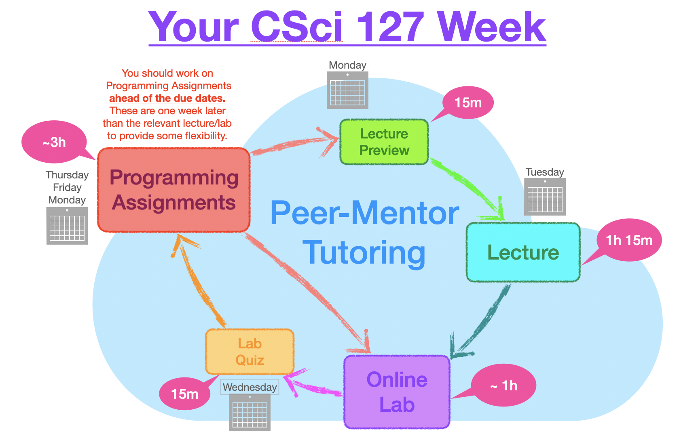

Course Designers:
Course Instructors:
COURSE STRUCTURE:
The course has required synchronous lecture meetings on Tuesday mornings and required weekly quizzes (Lecture Preview + Lab Quiz) & programming assignments.
Instead of a scheduled recitation, you are responsible for independently working through the weekly Lab found in the "Handouts" column in the Course Outline below.
We will offer optional synchronous lab review sessions on Wednesdays for those who need more guidance to work through the labs.
There are 5 programming assignments due EACH WEEK ( exact due dates can be found here).
Programming Assignments are directly related to Labs and Lectures.
Lecture notes will also be posted weekly in the "Handouts" column in Course Outline below.

Required synchronous Lecture meeting: Tuesday 9:45-11:00am on Zoom Click here to find a link for the Lecture
Optional synchronous lab-review meeting: Wednesday 1-2:30pm Click here to find a link for the Lab Review
Note: The Lab is required, it is the synchronous meeting that is optional!
Peer-Mentor Tutoring: Undergraduate Teaching Assistants (UTAs) are available to help:
| Week: | Topics: | Handouts: | Quiz: | Reading: | ||
|---|---|---|---|---|---|---|
| #1 | Lecture: 1 September |
Syllabus & Class Policies, Introductions, Introduction to Python: definite loops, simple output, primitive data types, overview of objects & modules; What is an algorithm? |
Syllabus, Programming Assignments, Hello, World, Hexagon example, Fancier hexagon, Lecture Notes |
Think CS: Chapter 1 & Chapter 4 | ||
| Lab & Quiz: | Getting started with Python & IDLE; Using modules and definite loops | Lab 1 |
Academic Integrity + Loops & Turtles | |||
| #2 | Lecture: 8 September |
Strings & Lists: looping through strings, console I/O, ASCII representation |
Loop Puzzle 1, Loop Puzzles 2, Caesar Cipher example, input() example, Lecture notes |
Think CS: Chapter 2 & Chapter 3 | ||
| Lab & Quiz: | String methods; Problem solving and the design process (simple parsing and translating) | Lab 2 |
Strings, Loops & Shell Commands | |||
| #3 | Lecture: 15 September |
Arithmetic; Indexing & Slicing; Colors, Hexadecimal notation; |
Event Timing (Arithmetic Challenge),
Slicing Challenges, Color Challenges, Lecture notes | Think CS: Section 8.11 &
Chapter 11, Numpy tutorial (DataCamp) |
||
| Lab & Quiz: |
Arrays and images in numpy, hexadecimal representation of colors (image processing) | Lab 3 |
Indexing, Slicing, Colors & Shell Commands | |||
| 19 September | No classes, No drop-in tutoring | |||||
| #4 | Lecture: 22 September |
More on Lists & Arrays; Images; Decisions; |
Decision Challenges, turtleString.py, Lecture notes |
Think CS: Chapter 7 & Chapter 11 | ||
| Lab & Quiz | Programming with decisions & files (flood maps) | Lab 4 |
Loops, Decision, Numpy Arrays & Shell Commands | |||
| 28- 29 September | No Lecture, No drop-in tutoring | |||||
| #5 | Lecture: 6 October |
Logical Expressions, Circuits, Binary Numbers; |
Types & Decisions Challenges, Logical Operators Challenges, SemesterIfAndExample, Basic Gates, Circuit Challenge1, Circuit Challenge2, Lecture notes |
Think CS: Chapter 7, Burch's Logic & Circuits, Explain Logic Gates |
||
| Lab & Quiz: | More on Decisions (snow pack); Circuits & Logical Expressions |
Lab 5 |
Circuits, Logical Expressions & Shell Commands | |||
| 12 October | No classes, No drop-in tutoring | #6 | Lecture: 13 October |
Accessing formatted data; | Arithmetic Challenges, List/String Challenges, Lecture notes |
Think CS: Chapter 6, 10-minutes to Pandas Tutorial, DataCamp Pandas Tutorial, Ubuntu Terminal Reference Sheet |
| Lab & Quiz: | CSV files via pandas (population change); Shell Scripts, github |
Lab 6 |
Formatted Data & Shell Commands | |||
| #7 | Lecture: 20 October |
Functions; NYC OpenData |
Motto Challenge, quarterImage.py, Hello with main(), Prep #1.2, Total & Tax Challenge, Greet Example, Happy Example, Jam Example, Month String Example, NYC OpenData |
Think CS: Chapter 6, 10-minutes to Pandas Tutorial, DataCamp Pandas Tutorial |
||
| Lab, Quiz, & Code Review: | OpenData NYC (shelter data); Using main() functions; Python from the command line |
Lab 7 |
Functions | |||
| #8 | Lecture: 27 October |
More Functions & Parameters; |
Decisions & Functions Example, Dessert Exam Questions, Foo example, Koalas, |
Think CS: Chapter 6 | ||
| Lab & Quiz: | Binning data (parking tickets); Top-down design (herd of turtles); Command line git |
Lab 8 |
Parameters & Functions | |||
| #9 | Lecture: 3 November |
Programming with Functions, Top-down Design; Mapping GIS Data (Folium); Random Number Generation; Preview: Indefinite Loops |
Sisters Example, numsConvert.py num2string example, Distance Check, Random Walk, | Think CS: Chapter 6, folium tutorial |
||
| Lab & Quiz |
Folium/leaflet.js (mapping CUNY locations);
Finding errors; Regular expressions (command line) |
Lab 9 |
Functions, Top-down Design & Shell Commands | |||
| #10 | Lecture: 10 November |
Indefinite Loops; Simulations; Design Patterns: Max; |
Nums & While, Max Num, Random Search (turtles), | Think CS: Chapter 8 | ||
| Lab & Quiz | More on Indefinite loops; Writing functions; unit testing | Lab 10 |
Indefinite Loops, Simulations & Shell Commands | |||
| #11 | Lecture: 17 November |
Python Recap; Simplified Machine Language; Design Patterns: Searching; |
Search, WeMIPS Emulator, | U Idaho reference sheet, MIPS Wikibooks | ||
| Lab & Quiz | Simplified machine language | Lab 11 |
Simplified Machine Language & Shell Commands | |||
| #12 | Lecture: 24 November |
Introduction to C++: program structure, data representation and I/O. Final Exam Overview |
cin/cout example, convert example, loops example, growth example, nested loops, |
Cplusplus Tutorial, C++ Tutorials Point, The Rook's Guide to C++ |
||
| Lab & Quiz | Using gcc | Lab 12 |
C++ & Shell Commands | |||
| #13 | Lecture: 1 December |
C++ control structures |
Decision example (C++), Logical Expressions (C++), Input Checking (C++), Input Checking, II (C++), Growth Example (C++), |
Cplusplus Tutorial, C++ Tutorials Point, The Rook's Guide to C++ |
||
| Lab & Quiz | Control Structures in C++ | Lab 13 |
C++ control structures | #14 | Lecture: 8 December |
Review | Final Exam Information |
| Quiz | No lab this week. Take advantage of drop-in tutoring for review!!! | End-of-semester Survey | ||||
| 10-11 December | Reading Day, No drop-in tutoring | |||||
| MONDAY 14 December 9am-11am |
Final Exam | Final Exam Information | ||||